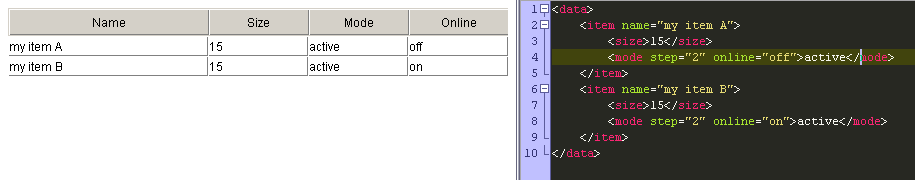

Data Loading
dhtmlxGrid supports the following types of data sources:
- CSV;
- JavaScript Array;
- JSON ( syntax templates );
- XML ( syntax templates );
- Custom Loading Types.
General Loading Rules
dhtmlxGrid 1.5 supported only loading from XML|CSV, and used the following methods for it:
grid.loadXML(url) // load data from a remote file grid.loadXMLString(string); // load data from a JS string grid.parseXML(object); // load data from an XML object (xmlhttprequest or XML island) grid.loadCSV(url) // load data from a remote file; grid.loadCSVString(string); // load data from a JS string
Starting from dhtmlxGrid 1.6, new common loaders were implemented (old API is still supported, but it is highly recommended to use new API):
grid.load(url) // load data from a remote file, XML is expected by default; grid.load(url,"csv") // the same for CSV format; grid.load(url,"json") // the same for JSON format; grid.load(url,"jsarray") // the same for JSArray format. grid.parse(object) // load data from a string|object, XML is expected by default; grid.parse(url,"csv") // the same for CSV format; grid.parse(url,"json") // the same for JSON format; grid.parse(url,"jsarray") // the same for JSArray format.
The method load() is used for loading data from an external file (XML, JSON, JSArray, CSV) and has the following parameters:
- url - url to the external file;
- call - callback function after loading; optional parameter, can be omitted;
- type - type of data (xml,csv,json,jsarray); optional parameter; xml by default.
Loading from CSV
To load data from a remote file (static CSV file or any kind of script that will generate CSV output), the following command should be called:
grid.load(url,"cvs"); // or grid.load(url,callback,"csv"); // callback is an optional function, will be called after data is loaded and processed
Data loading from a CSV string requires the following code lines:
var csvstr="11,12,13\n21,22,23\n31,32,33"; grid.parse(csvstr,"csv");
Note: for backward compatibility, methods loadCSVFile() and loadCSVString() can still be used.
Setting Cell/Row Delimiter
By default, the component will use:
- , - cell delimiter;
- \n - row delimiter.
These values can be changed in the following way:
grid.csv.row = "any row delimiter"; grid.csv.cell = "any cell delimiter";
Note: for backward compatibility, method setCSVDelimiter() can still be used.
Loading from JS Array
To load data from a remote file (a static JS file or any kind of script that will generate JS Array output), the following code strings should be used:
grid.load(url,"jsarray"); // or grid.load(url,callback,"jsarray"); // a callback is an optional function that will be called after the data is loaded and processed
To load data from a JSArray object, the following code lines should be written:
var ar = [[11,12,13],[21,22,23],[31,32,33]] grid.parse(ar,"jsarray");
Loading data from JSON
To load data from a remote file (a static JSON file or any kind of script that will generate json output), the following code strings should be used:
grid.load(url,"json"); // or grid.load(url,callback,"json"); // a callback is an optional function that will be called after the data is loaded and processed
Loading data from a JSON object is also possible:
var js={ rows:[ { id:1001, data:[ "100", "A Time to Kill", "John Grisham", "12.99", "1", "05/01/1998"] }, { id:1002, data:[ "1000", "Blood and Smoke", "Stephen King", "0", "1", "01/01/2000"] } ]} grid.parse(js,"json");
Loading from XML
To load data from a remote file (static XML file or any kind of script that will generate XML output), the following code strings should be used:
grid.load(url); // or grid.load(url,callback); // a callback is an optional function that will be called after the data is loaded and processed
To load data from an XML object or an XML string, the user should apply the following command:
grid.parse(xml_object); // or grid.parse(xml_string);
Note: for backward compatibility, methods loadXML(), loadXMLString(), and parseXML() can still be used.
Data loaded from XML can contain some extra values, which will not be visible in grid by still accessible through API
Custom Loading Types Creation
dhtmlxGrid 1.6+ allows to customize the incoming data format in many ways. But still, the user may need to define some custom format. This can be done with relatively little effort. For each new data format the user needs to use 3 methods:
- grid._process_[type] - must process the incoming stream of data and separate it in rows;
- grid._process_[type]_row - takes the data related to rows and processes it;
- grid._get_[type]_data - must provide the way to locate the value of a column inside a data row.
For example, we have an XML in the following format:
<data> <item name="my item A"> <size>15</size> <mode step="2" online="off">active</mode> </item> <item name="my item B"> <size>15</size> <mode step="2" online="on">active</mode> </item> </data>
The format of the data used doesn't fit for any of grid's XML format. One of possible solutions is to add XSLT transformation that will convert data to the format acceptable by the grid. But if the user has a lot of data in such custom format, making custom loading type more sensible.
First Step - Selecting Data Type Name
The names XML, XMLA, XMLB, JSON, ASArray, CSV are already taken, so any other name is valid. For example “custom_xml” as the name for this new type.
Second Step - Defining Row Level Parser
The row parser function must separate incoming data in rows and assign IDs to them. In this case, the data is XML, so it is pretty simple to take necessary data by using XPath:
grid._process_custom_xml=function(xml){ this._parsing=true; var rows = xml.doXPath("//item"); // get all row elements from XML for (var i = 0; i < rows.length; i++){ var id = this.getUID(); // XML doesn't have native ids, so custom ones will be generated this.rowsBuffer[i]={ // store references to each row element idd: id, data: rows[i], _parser: this._process_custom_xml_row, // cell parser method _locator: this._get_custom_xml_data // data locator method }; this.rowsAr[id]=rows[i]; // store id reference } this.render_dataset(); // force update of grid's view after data loading this._parsing=false; }
Third Step - Define Cell Level Parser
Cell parser must take the data for each column of the grid from row related XML. Before its code will be implemented, the user should make some draft - what data will be mapped for what column.
| Column | Data From XML |
|---|---|
| 0 | item@name |
| 1 | size |
| 2 | mode |
| 3 | mode@online |
<script> grid._process_custom_xml_row=function(r, xml){ var size = this.xmlLoader.doXPath("./size", xml)[0]; // get size sub-tag var mode = this.xmlLoader.doXPath("./mode", xml)[0]; // get mode sub-tag var strAr = [ xml.getAttribute("name"), size.firstChild.data, mode.firstChild.data, mode.getAttribute("online") ]; // set just a plain array as no custom attributes are needed r._attrs={}; for (j=0; j < r.childNodes.length; j++) r.childNodes[j]._attrs={}; // finish data loading this._fillRow(r, strAr); return r; } </script>
Final Step
At this very stage everything is almost done. Now, the user can apply the following method to load the data in the custom format:
<script> grid.load(url,"custom_xml"); </script>
 The last method can be defined as Locator. It has sense only if the user plans to apply smart rendering mode. This method is not necessary for operations in the standard mode (it is used to locate the data inside unparsed chunks).
Full code of the sample can be downloaded by next link
 - url for the sample
- url for the sample
Handling Error Response
When incorrect data retrieved from server, component shows an “Incorrect XML” message, which may be replaced with any other kind of custom reaction. It can be done as
dhtmlxError.catchError("LoadXML",function(a,b,data){ //data[0] - request object //data[0].responseText - incorrect server side response ... any kind of custom logic here ... });